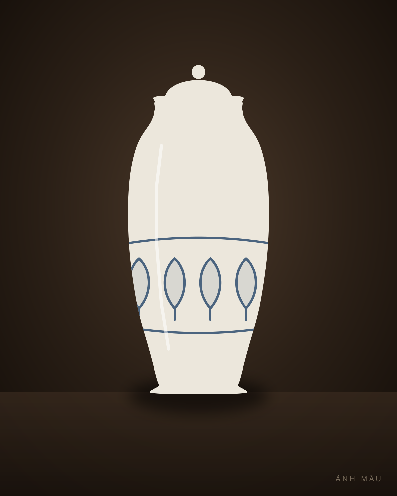
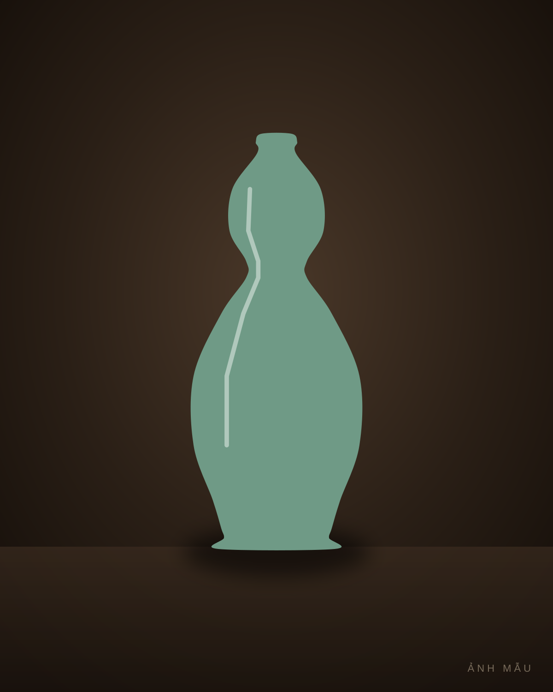
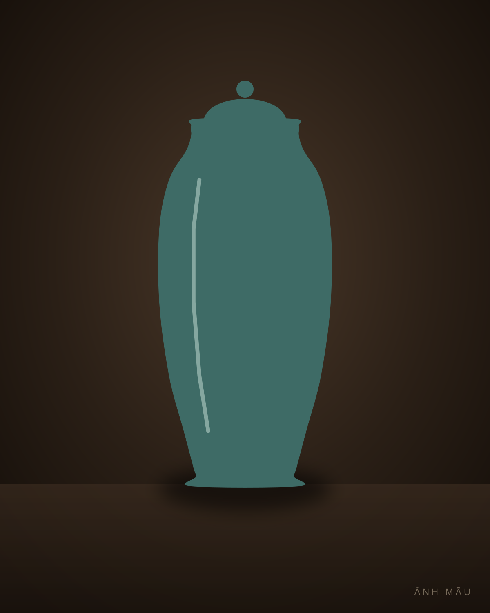
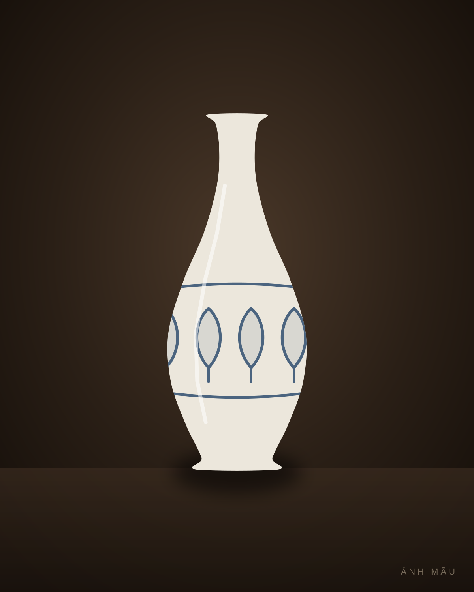
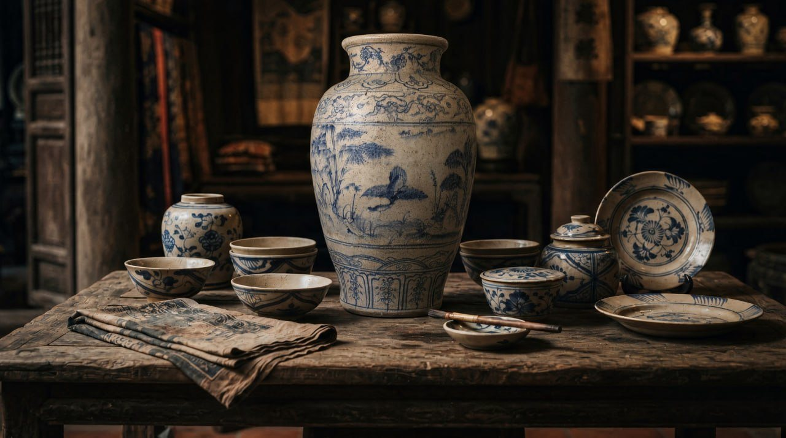

Gốm Thuần Ngọc
Chạm thời gian, giữ tinh hoa.
Gốm Việt xưa từ kho của anh Đỗ Phương Thuần, người Cổ Loa. Mỗi món lên đây đều có một hồ sơ: ảnh bốn phía và đáy, số đo, tình trạng ghi cả chỗ sứt, và một dòng mua của ai, năm nào.
Rõ gốc
Mỗi món ghi mua của ai, năm nào. Món không ghi được dòng này thì không lên kệ.
Nói thật
Sứt, nứt, vá đều ghi ra và có ảnh riêng. Khách thấy đúng món mình sẽ nhận.
Gói kỹ
Giấy lụa, xốp hơi, hộp trong hộp. Món đến tay sai mô tả thì gửi lại, hoàn tiền.
Các món đang có
Mỗi món một chiếc, có hồ sơ riêng: ảnh bốn phía và đáy, số đo, tình trạng.
Xem tất cả 7 món →Vò men nâu vẽ lá
Bình men rạn vẽ trúc

Hũ men lam vẽ cá

Bình hồ lô men ngọc

Chóe lớn men xanh đồng đắp nổi

Bình tỳ bà men lam vẽ hoa sen


Một kho, mười nghìn món, mỗi món một chuyện.
Anh Thuần mua vào từng chiếc qua nhiều năm, giữ lại chứ không bán vội. Giờ kho mở dần, mỗi tuần một ít, món nào cũng soi kỹ rồi mới lên.
Đọc chuyện cái khoHỏi đáp
Làm sao biết món rõ gốc?
Mỗi trang món có một dòng "Về kho" ghi anh Thuần mua của ai, năm nào. Món không ghi được dòng này thì không lên kệ.
Ảnh có đúng món sẽ nhận không?
Ảnh chụp chính chiếc đó: bốn phía, miệng, đáy, đặt cạnh thước. Sứt, nứt, vá đều ghi ra và có ảnh riêng. Muốn xem kỹ hơn, anh chị bấm "Xin thêm ảnh, clip", anh Thuần quay riêng món đó gửi anh chị.
Có xem tận tay trước khi nhận được không?
Ở Hà Nội, anh chị có thể hẹn đến xem tận tay trước khi nhận.
Gửi đi xa có sợ vỡ không?
Món bọc giấy lụa, xốp hơi nhiều lớp, đặt trong hộp chèn kín rồi vào một hộp lớn hơn; gửi có mã theo dõi và khai giá trị. Anh chị quay clip lúc mở hộp; món vỡ hoặc khác mô tả thì kho nhận lại và hoàn tiền.
Thích một món nhưng chưa quyết ngay?
Mỗi món chỉ có một chiếc. Anh chị đồng ý thì kho giữ món 24 giờ, trang món chuyển sang "Đang giữ" để người khác biết.
Còn điều gì muốn hỏi?
Nhắn kho qua Zalo, anh Thuần trả lời từng câu.